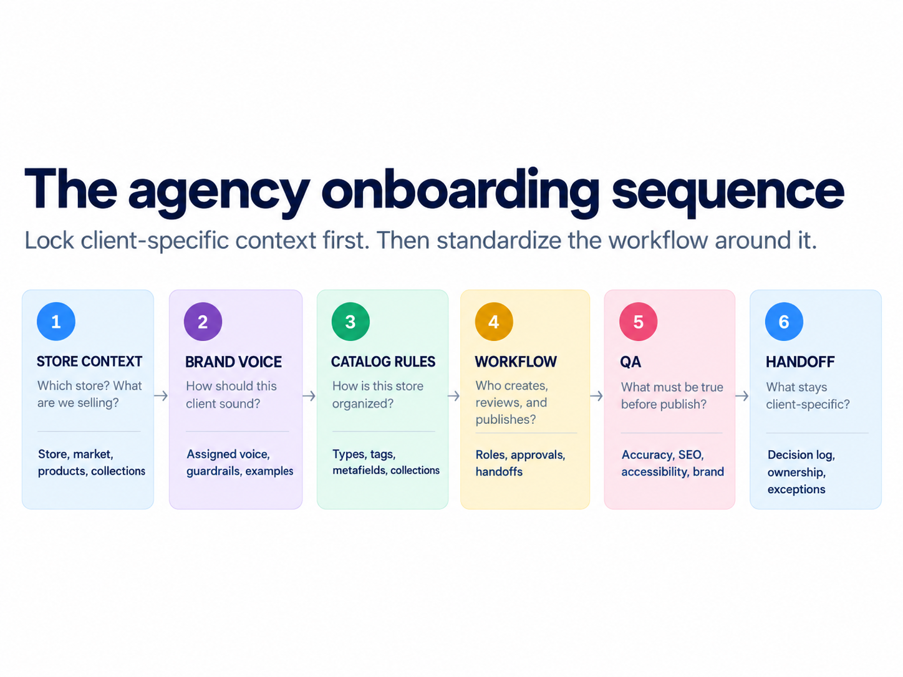
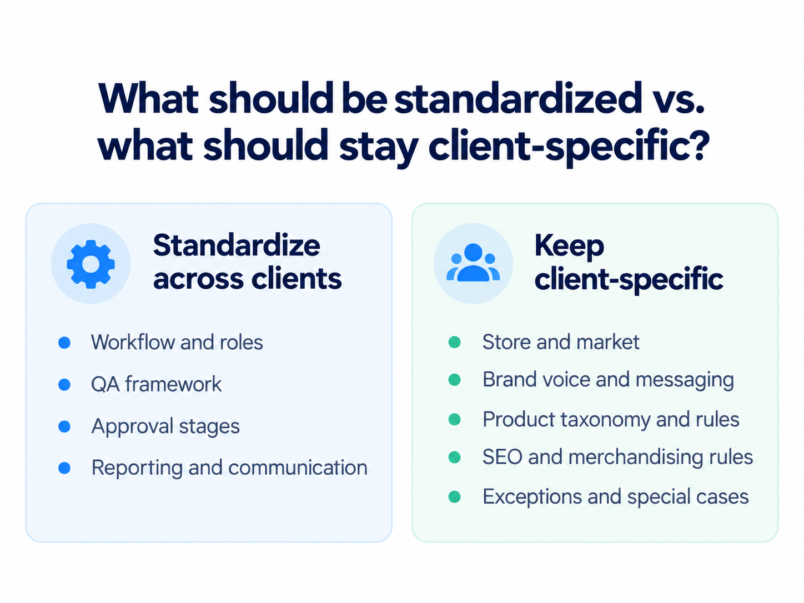
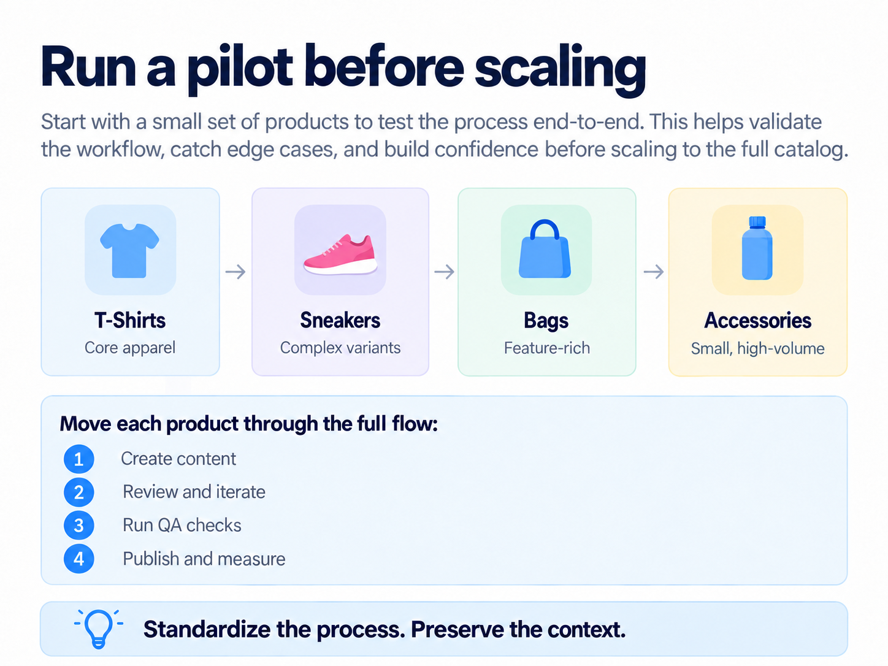

Adding a new ecommerce client should not mean cloning the previous client’s setup and swapping the logo.
Agencies need repeatable systems. But the wrong kind of repeatability creates a different problem: every store starts inheriting the same voice, catalog assumptions, SEO logic, and merchandising decisions.
The scalable approach is more selective: standardize how you gather and manage context, while keeping the context itself client-specific.
1. The agency onboarding sequence
A smooth client setup is a sequence of decisions, not a single setup screen.

2. Start with the store, not the content.
Before touching product copy, understand the environment it belongs to.
- What does this store sell?
- Who buys it?
- How is the catalog organized?
- Which collections matter?
- Are there custom metafields or unusual product fields?
- Which markets or storefronts are involved?
This context should shape every content decision that follows.
3. Treat Brand Voice as configuration, not a mood board.
“Friendly but professional” is not enough. An agency needs a usable voice definition that captures vocabulary, rhythm, personality, point of view, and boundaries.
In a multi-client account, that Brand Voice also needs to be assigned to the correct store. The dangerous failure mode is not just bad copy. It is good copy in the wrong brand.
For the deeper framework, see Brand Voice Isn’t Just Tone.
4. Document the catalog rules before creating content.
Two Shopify stores can organize the same concept very differently. One may use product types heavily. Another may rely on tags, collections, or metafields.
Capture the client’s actual conventions before the team starts generating or publishing product content.
| Rule | What to document |
|---|---|
| Product types | Approved categories and naming conventions |
| Tags | Allowed uses, naming patterns, and cleanup rules |
| Collections | How products are grouped and merchandised |
| Metafields | Required custom fields and what belongs in each |
| Vendor | Normalization rules and approved display values |
| Variants | Size, color, and option naming conventions |
5. Define who creates, reviews, approves, and publishes.
A content workflow might be agency creates → account lead reviews → client approves → agency publishes. Another client may allow agency QA to move straight to publish.
Neither is automatically better. The mistake is leaving the workflow undefined.
| Decision | Example |
|---|---|
| Who drafts? | Agency content team |
| Who reviews? | Account lead |
| Who approves? | Client marketing lead |
| Who publishes? | Agency |
| What needs approval? | New products and structural changes |
| What does not? | Minor typo and formatting fixes |
6. Build QA around the client.
The QA framework can remain consistent across accounts, while the checks inside it adapt to the client.
Baseline QA
- Product accuracy
- Brand Voice
- SEO
- Accessibility
- Merchandising
- Publishing readiness
Client-specific QA
- Compliance requirements
- Approved claims
- Vendor normalization
- Unique naming rules
- Special approval gates
- Market-specific requirements
7. Decide what requires client approval.
Agencies lose time when every microscopic edit needs approval. They create risk when major decisions happen without it.
| Often safe to pre-authorize | Usually worth explicit approval |
|---|---|
| Typo corrections | Changing product identity |
| Formatting cleanup | Major taxonomy changes |
| Alt-text improvements | New product claims |
| Approved Brand Voice application | URL changes |
| Routine description refreshes | Large collection restructuring |
8. Standardize the process. Keep client context separate.

Each store should retain its own Brand Voice, product context, collection structure, SEO assumptions, merchandising rules, and approval expectations.
9. Create a client decision log.
Not every important operating rule fits neatly into Shopify.
Examples might include “Never call this fabric eco-friendly,” “Holiday collections require client approval,” or “Product titles should not include color.”
A decision log turns those conversations into institutional memory instead of relying on whoever happens to remember them.
10. Run a pilot before scaling.
Do not onboard hundreds of products before discovering the workflow is wrong. Use a small, deliberately varied sample to test the process end-to-end.

11. Finish onboarding with a handoff, not a disappearing act.
The onboarding phase should end with a clear operating record. The team should know which store is being managed, which Brand Voice is assigned, how the catalog is structured, who owns each stage, what requires approval, which QA checks apply, and where exceptions are documented.
At that point, the client is no longer “being onboarded.” They are operating inside a repeatable system.
Where penstack fits in
Penstack lets an agency standardize the process while keeping store-specific context isolated.
The working sequence is straightforward: choose the correct client/store → assign the correct Brand Voice → work from that store’s product and collection context → create or refresh content → review → QA → publish.
The important part is what does not bleed between stores. A Brand Voice assigned to Client A should not become context for Client B. Neither should taxonomy assumptions, merchandising rules, or product information.
The takeaway
Standardize the process. Preserve the context. Agency scalability comes from using the same onboarding system to capture what makes each client different.
Build a repeatable agency workflow without flattening every client into the same setup.
Keep stores, Brand Voices, catalog rules, and approval context connected inside penstack.